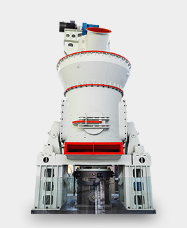
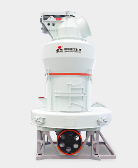
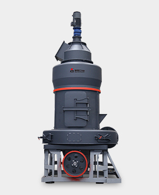
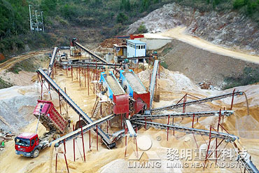
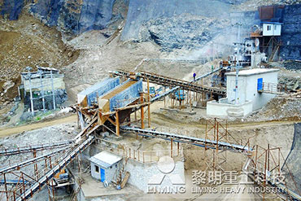
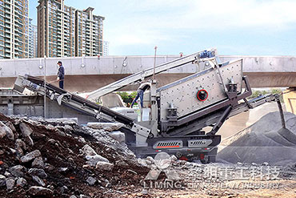

热销设备 黎明重工科技生产全套石料生产线设备，为您提供全面的技术支持。配置的石料生产线均根据实地现场勘察情况或客户实际要求为客户精心设计，充分体现了设计的合理性、实效性、适用性，处理量大、磨损低、运行成本低是其显著的特点。 查看更多>>  5X系列欧版智能磨粉机 查看详情  欧版磨粉机 查看详情  LM立磨 查看详情 设备破碎产量高？能源利用率高？产品粒型优良？维修调试方便？服务及时周到？ 您的这些要求，我们统统帮您办到！ 点击咨询 案例现场  贵州铜仁碎石制砂生产线 加工物料：花岗岩、石灰石 产 量：200-250t/h 应用领域：搅拌站、高速公路  遵义绥阳碎石生产线 加工物料：石灰石 产 量：500t/h 应用领域：搅拌站、高速公路  湖北武汉移动站建筑垃圾破碎项目 加工物料：建筑垃圾 产 量：100t/h 应用领域：城市基础设施建设 投资指导 方解石加工专用超细磨粉机 1250目磨粉机生产厂家 方解石粉即重钙粉，在工业生产中应用广泛，在人造石、合成橡胶、复合型塑料、电缆、造纸、化妆品、医药、饲料、建材等方面作为填充料，得到市场的普遍青睐。方解石磨粉机正是把方解石原材料加工成方解石粉(重钙粉)的最主要设备，方解石磨粉机的质量也直接关 ... 叶腊石(巴林石)加工用哪种破碎机、磨粉机比较合适? 铁道石子加工专用破碎机 新一代石料厂破碎设备 山东省哪里有破碎机?69鄂破机尺寸是什么? 采石场时产200吨花岗岩高速公路石子设备利润 干矿磨矿加工高钙粉设备 黎明重工立式磨机 天然石英石加工厂用的全套生产线设备 黎明制砂机价格 关于我们 黎明重工科技股份有限公司，是一家专业生产大中型破碎、制砂、磨粉设备，研、产、销三位一体的股份制企业，下辖多家全资子公司。公司总部坐落于传统与创新交融的郑州国家高新技术产业开发区，位于上街的机械装备工业园占地67000平方米。30年来，公司秉承现代企业的科学管理模式，精工制造、锐意进取、开拓创新、快速崛起成为国内机械制造业大品牌...